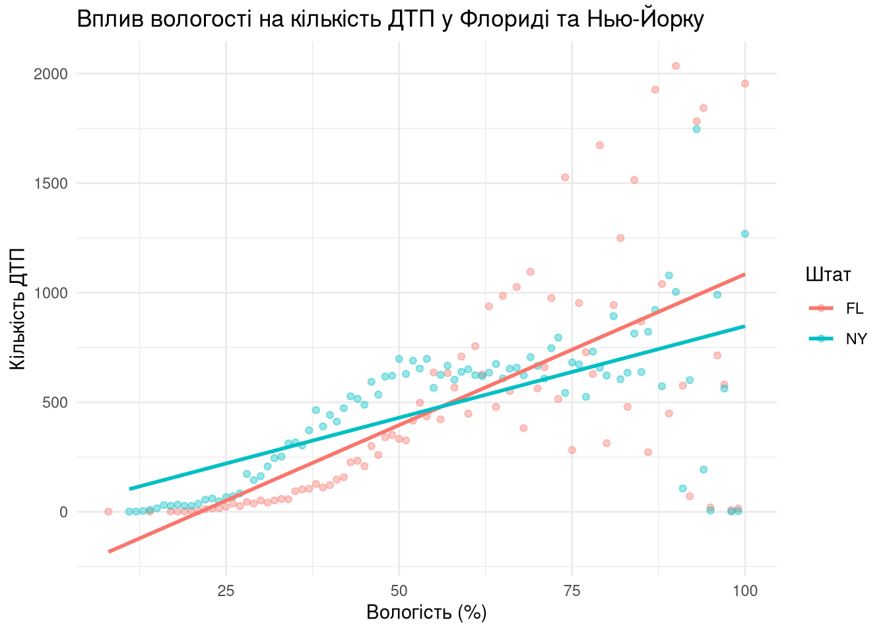
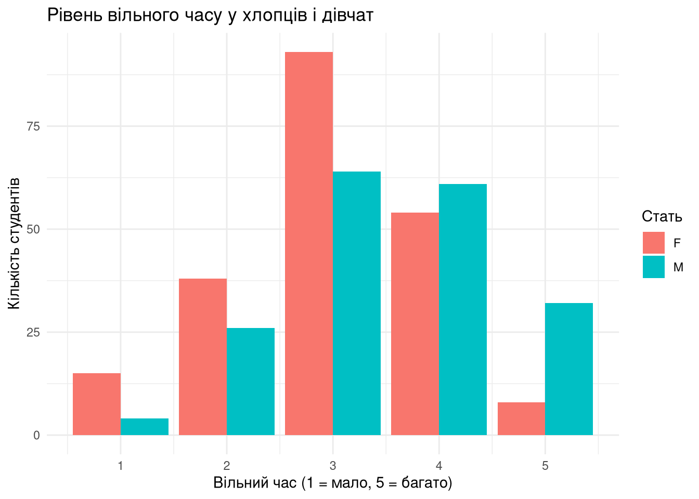
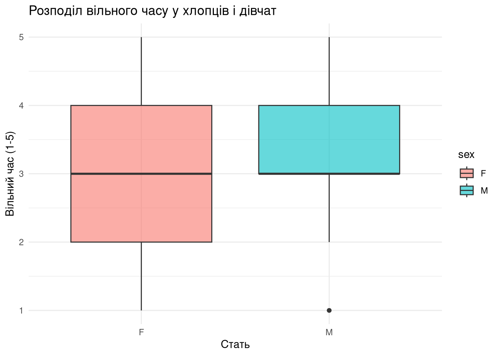
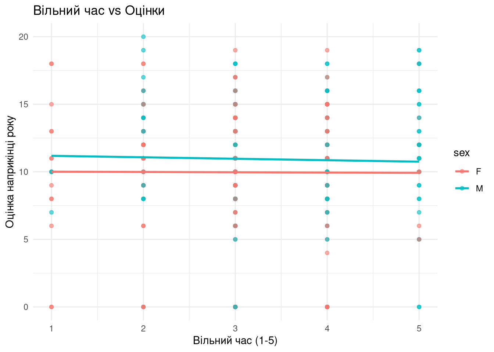
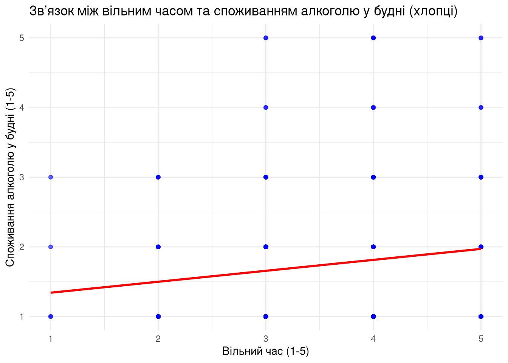
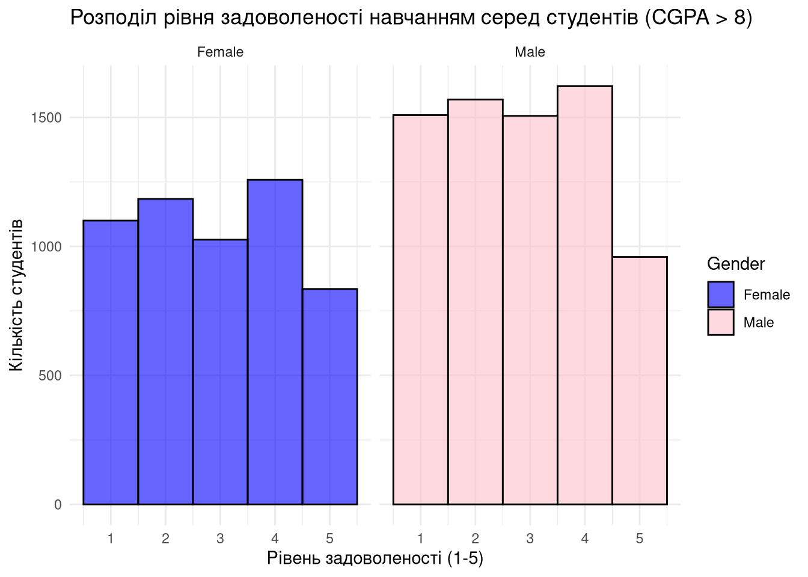

library(tidyverse)
library(vroom)Depression, Academic Weapons & Car Crashes
A short story about 3 dodgy datasets
Датасет 1: US Accidents (2016 - 2023)
Про що датасет?
Загальна інформація
- ~7M записів
- 46 змінних
- Джерело: посилання на Kaggle
- Автор: Sobhan Moosavi
Вельми цікавий датасет, у якому зібрана інформарція щодо великої кількості автомобільних пригод у Сполучених Штатах у період 2016 - 2023 роки. Наявна велика кількість змінних, більшість з них несуть як числову інформацію (н. Visibility), так і булеву (н. Traffic_Signal) чи категоріальну(н. State).
Research question
Своє дослідницьке запитання я сформував наступним чином:
Чи відрізняється кореляція між рівнем вологості та кількістю ДТП у південному (Флорида) та північному (Нью-Йорк) штатах?
Загальна інформація
Ці два штати було обрано не випадково, адже вони підпадають одразу під дві важливі умови:
- Різний клімат. Нью-Йорк знаходиться на півночі та має здебільшого сухий континентальний клімат. Флорида ж навпаки: є найпівденнішим штатом США з вологим морським кліматом.
- Обидва штати мають подібну кількість спостережень.
Чому це питання важливе?
Як відомо, автомобільний транспорт – один з найбільш небезпечних видів транспорту, який спричиняє величезну кількість травм та смертей. То чому б не дослідити, на основі обраного датасету, вплив вологості на кількість дорожньо-транспортних пригод?
Отримані результати можуть бути використані, наприклад, для впровадження нових законодавчих регуляцій, покликаних зменшити вплив погоди на безпечність автомобільних подорожей.
Формулювання гіпотез
H0: Кореляція між рівнем вологості та кількістю ДТП є однаковою у Флориді та Нью-Йорку.H1: Кореляція між рівнем вологості та кількістю ДТП відрізняється у Флориді та Нью-Йорку.
Використані змінні
Для відповіді на це запитання я буду використовувати дані з наступних колонок:
Humidity: Кількісна змінна, що показує вологість (\(%\)) в місцевості, де сталося ДТП.State: Категоріальна змінна, по якій ми будемо групувати ДТП.Accidents_number: Кількісна змінна, яка буде створена для підрахунку кількості ДТП для кожного рівня вологості у кожному штаті.
Data-cleaning
Спершу, виконаємо рутину:
- Підключимо необхідні бібіліотеки. Звісно, я використовуватиму tidyverse для візуалізації, а також vroom для оптимізованого завантаження датасету у R.
- Завантажимо датасет у R та зробимо семпл, з яким будемо працювати надалі. Основа ціль: зменшити кількість записів та сфокусуватися на одному році –
2019.
crashes_tbl_raw <- vroom("/home/yawog/Documents/Academic Weapon Catalog/R/R_team_project/US_Accidents_March23.csv", col_select = c("ID", "State", "Humidity(%)", Start_Time))
# Використав vroom, адже цей метод є найшвидшим
crashes_tbl <- crashes_tbl_raw %>%
filter(year(Start_Time) == 2019)
# Я хотів би сконцентруватися тільки на одному році, тож фільтрую всі рядки та обираю 2019 рік.
crashes_tbl_filtered <- crashes_tbl %>%
rename(Humidity = `Humidity(%)`) %>%
select(ID, State, Humidity) %>%
filter(State %in% c("FL", "NY"))
# Обираю змінні, з якими буду працювати та обираю випадки лише з NY та FL.
rm(crashes_tbl_raw, crashes_tbl)
gc()
# Звільнюю пам'ять- Наш датасет майже готовий до подальшої аналітики, залишилося лише перевірити його на наявність NA-значень та прибрати їх, за наявності.
cat("Частка NA-значень у датасеті: ", round((mean(is.na(crashes_tbl_filtered$Humidity)) * 100), 2), "%", sep = "")Частка NA-значень у датасеті: 0.94%Як ми бачимо, частка NA у датасеті становить лише \(0.94\%\). Прибираємо їх!
crashes_tbl_filtered <- crashes_tbl_filtered %>% na.omit()- Наступний крок – урівняти розміри вибірок, аби записів щодо Нью-Йорку і Флориди була однакова кількість.
min_sample_size <- min(
nrow(crashes_tbl_filtered %>% filter(State == "FL")),
nrow(crashes_tbl_filtered %>% filter(State == "NY"))
)
set.seed(42)
# Вибираємо випадкові підвибірки однакового розміру
fl_subset <- crashes_tbl_filtered %>% filter(State == "FL") %>% sample_n(min_sample_size)
ny_subset <- crashes_tbl_filtered %>% filter(State == "NY") %>% sample_n(min_sample_size)
# Об'єднуємо збалансовані підвибірки в один датасет
crashes_tbl_balanced <- bind_rows(fl_subset, ny_subset)Хоча ми втрачаємо невелику кількість даних, що певним чином може викривити загальну картину, натомість це значно спрощує порівняння між штатами та дозволяє легше інтерпретувати результати подальших тестів.
Проведення тестів
Я зупинився на такій комбінації статистичних тестів:
Тест Спірмена. Я хочу провести два тести на пошук кореляції між к-стю ДТП та рівнем вологості окремо для кожного штату. Поглянемо, чи взгалі є якийсь зв’язок між цими змінними.
T-тест.
Проводимо тест на кореляцію Спірмена:
H0: Кореляції між кількістю ДТП та рівнем вологості немає.H0: Є значущий зв’язок між кількістю ДТП та рівнем вологості. **Гіпотези будуть перевірятися окремо для двох штатів.*
crashes_summary <- crashes_tbl_balanced %>%
group_by(State, Humidity) %>%
summarise(Accidents_number = n(), .groups = "drop")
cor_FL <- cor.test(crashes_summary %>% filter(State == "FL") %>% pull(Humidity),
crashes_summary %>% filter(State == "FL") %>% pull(Accidents_number),
method = "spearman",
exact = FALSE)
cor_NY <- cor.test(crashes_summary %>% filter(State == "NY") %>% pull(Humidity),
crashes_summary %>% filter(State == "NY") %>% pull(Accidents_number),
method = "spearman",
exact = FALSE)
Флорида
▪️ Кореляція Спірмена: 0.718
▪️ P-value: 7.48e-15
Нью-Йорк
▪️ Кореляція Спірмена: 0.640
▪️ P-value: 1.06e-11- Як можна побачити,
p-valueдля обох штатів є значно меншим за \(0.05\), тож у нас є підстави відхилити H0-гіпотезу та підвердити припущення, що зв’язок між к-стю ДТП та вологістю дійсно присутній в обох штатах.
Застереження
Важливо наголосити, що присутність зв’язку не вказує на залежність однієї змінної від іншої. Не обов’язково, що рівень вологості напряму впливає на кількість ДТП. Можливо, зв’язок між цими змінними викликаний іншими факторами, що не розглядаються тут.
- Значення кореляції у Флориді є вищим, ніж у Нью-Йорку: Тобто, зв’язок у штаті сонячного сяйва прослідковується краще, ніж у Нью-Йорку.
Візуалізація

Я вирішив використати візуалізацію за допомогою лінійної регресії, аби показати, що зв’язок дійсно присутній.
Датасет 2: Portuguese Students’ Math Performance
Про що датасет?
Загальна інформація
- 395 записів
- 33 змінні
- Джерело: UC Irvine Machine Learning Repository
- Автор: Paulo Cortez
Насправді, пошук датасету виявився доволі складним завданням порівняно з іншими частинами проєкту xD. Однак цей заповітний датасет я знайшла випадково, приділяючи увагу ключовим словам у назві – “Student Performance”.
Загалом датасет зібрав у собі шляхом опитування бали з математики наприкінці кожного з “триместрів” учнів з двох португальських шкіл, а саме Gabriel Pereira та Mousinho da Silveira, 2008-го року, розглядаючи успішність у контексті персональної (і не лише) оцінки багатьох “зовнішніх” факторів: к-сті вільного часу, участі в позакласових активностях, к-сті прогулів та ін. Усі змінні представлені за допомогою різних типів даних і є як кількісними (e.g. age, absences), так і категоріальними (e.g. address, famsize).
Research question
Тож дослідницьке питання звучить так:
Чи відрізняється в середньому кількість вільного часу й спосіб його проведення в старшокласників різної статі та як це впливає на їхню успішність з математики?
Чому це питання важливе?
Зниження рівня знань з математики – загальноєвропейська тендеція, що негативно впливає на інноваційний потенціал у майбутньому та обмежує доступ учнів до багатьох інших дисциплін, які будуються на засадах специфічної логіки чи потребують дотичних знань. Це підтверджують, наприклад, глобальні
Попри економічне та соціо-культурне розмаїття Європи, впливи на освіту та поведінкові патерни серед підлітків лишаються консистентними, а дані, зібрані в Португалії, котра лишається однією не з провідних країн з боку шкільної освіти, можуть слугувати чудовою моделлю для дослідження та покращення освітніх процесів у Європі, зокрема й в Україні.
Формулювання гіпотез
H0: Суттєвої різниці між тим, скільки в середньому вільного часу мають хлопці та дівчата, немає.
H1: Хлопці мають у середньому більше вільного часу.
H0: Суттєвої різниці між тим, скільки в середньому гуляють хлопці й дівчата, немає.
H1: Хлопці в середньому гуляють більше.
H0: Кореляції між кількістю вільного часу та фінальними оцінками з математики немає, тобто дорівнює нулю.
H1: Кореляція між кількістю вільного часу та фінальними оцінками з математики не дорівнює нулю.
Використані змінні
Спершу, для доведення чи відхилення гіпотези я розгляну декілька змінних:
sex: Категоріальна змінна, що свідчить про стать учнів.freetime: Категоріальна змінна, яка відповідає оцінці скільки вільного часу учні мають після школи.goout: Категоріальна змінна, яка відповідає оцінці частоти прогулянок учнів з друзями.
Статистичні тести і візуалізація
library(tidyverse)df <- read_delim('student-mat.csv', delim = ';')cor.test(df$freetime[df$sex == "M"], df$G3[df$sex == "M"], method= 'spearman')
Spearman's rank correlation rho
data: df$freetime[df$sex == "M"] and df$G3[df$sex == "M"]
S = 1123731, p-value = 0.6726
alternative hypothesis: true rho is not equal to 0
sample estimates:
rho
-0.03110081 cor.test(df$freetime[df$sex == "F"], df$G3[df$sex == "F"], method= 'spearman')
Spearman's rank correlation rho
data: df$freetime[df$sex == "F"] and df$G3[df$sex == "F"]
S = 1534609, p-value = 0.7392
alternative hypothesis: true rho is not equal to 0
sample estimates:
rho
-0.02322019 

`geom_smooth()` using formula = 'y ~ x'
t.test(freetime ~ sex, data = df, var.equal = FALSE)
Welch Two Sample t-test
data: freetime by sex
t = -4.8581, df = 382.3, p-value = 1.732e-06
alternative hypothesis: true difference in means between group F and group M is not equal to 0
95 percent confidence interval:
-0.6700755 -0.2839558
sample estimates:
mean in group F mean in group M
3.009615 3.486631 t.test(goout ~ sex, data = df, var.equal = FALSE)
Welch Two Sample t-test
data: goout by sex
t = -1.5057, df = 384.64, p-value = 0.133
alternative hypothesis: true difference in means between group F and group M is not equal to 0
95 percent confidence interval:
-0.38971787 0.05168825
sample estimates:
mean in group F mean in group M
3.028846 3.197861 t.test(Dalc ~ sex, data = df, var.equal = FALSE)
Welch Two Sample t-test
data: Dalc by sex
t = -5.3639, df = 282.84, p-value = 1.696e-07
alternative hypothesis: true difference in means between group F and group M is not equal to 0
95 percent confidence interval:
-0.6531562 -0.3024690
sample estimates:
mean in group F mean in group M
1.254808 1.732620 `geom_smooth()` using formula = 'y ~ x'
Датасет 3: Student Depression Dataset
Про що датасет?
Загальна інформація
- 141K записів
- 18 змінні
- Основні змінні: CGPA, Study Satisfaction, Gender, Mental Health Indicators
- Джерело: Kaggle
- Автор: Shodolamu Opeyemi
Датасет було зібрано в рамках дослідження студентського благополуччя, яке включає аспекти академічної успішності, рівня стресу та задоволеності навчанням. Дані є анонімізованими, що усуває потенційні етичні ризики використання.
Research question
Дослідницьке запитання звучить наступним чином:
Чи мають студентки з високим CGPA (>8) нижчий рівень задоволеності навчанням порівняно зі студентами з таким самим CGPA?
Чому це питання важливе?
Аналіз академічного досвіду студентів різних статей допоможе виявити можливі проблеми гендерної нерівності в освіті/культурному вихованні. Перевіряємо наявність гендерної упередженості.
Формулювання гіпотез
H0: Студентки з \(CGPA > 8\) мають такий самий або вищий рівень задоволеності навчанням, ніж студенти.H1: Студентки з \(CGPA > 8\) мають нижчий рівень задоволеності навчанням, ніж студенти.
Використані змінні
Список змінних, що використовуються у дослідженні.
Gender: категоріальна змінна, що представляє стать студентів.CGPA: числова змінна, що вказує на середній бал.Study.Satisfaction: числова змінна, що відображає рівень задоволеності навчанням.
Робота з датасетом
library(dplyr)
library(ggplot2)
data <- read.csv("Student Depression Dataset.csv")
# Видалення пропущених значень для коректного аналізу
data <- na.omit(data)
# Перетворення змінної "Gender" у факторний формат
data$Gender <- as.factor(data$Gender)
# Фільтрація даних для студентів із CGPA > 8
filtered_data <- data %>% filter(CGPA > 8)
# Впорядкування рівнів змінної Gender, щоб "Female" була першим рівнем
filtered_data$Gender <- factor(filtered_data$Gender, levels = c("Female", "Male"))# Гляньмо, що у нас вийшло
str(filtered_data)'data.frame': 12567 obs. of 18 variables:
$ id : int 2 32 52 56 59 62 100 106 145 161 ...
$ Gender : Factor w/ 2 levels "Female","Male": 2 1 2 1 2 2 1 2 2 2 ...
$ Age : num 33 25 30 30 28 31 19 29 25 29 ...
$ City : chr "Visakhapatnam" "Jaipur" "Thane" "Chennai" ...
$ Profession : chr "Student" "Student" "Student" "Student" ...
$ Academic.Pressure : num 5 4 3 2 3 2 2 3 3 3 ...
$ Work.Pressure : num 0 0 0 0 0 0 0 0 0 0 ...
$ CGPA : num 8.97 8.13 9.54 8.04 9.79 8.38 8.52 8.58 9.93 8.74 ...
$ Study.Satisfaction : num 2 3 4 4 1 3 4 3 3 4 ...
$ Job.Satisfaction : num 0 0 0 0 0 0 0 0 0 0 ...
$ Sleep.Duration : chr "5-6 hours" "5-6 hours" "7-8 hours" "Less than 5 hours" ...
$ Dietary.Habits : chr "Healthy" "Moderate" "Healthy" "Unhealthy" ...
$ Degree : chr "B.Pharm" "M.Tech" "BSc" "Class 12" ...
$ Have.you.ever.had.suicidal.thoughts..: chr "Yes" "Yes" "No" "No" ...
$ Work.Study.Hours : num 3 1 1 0 12 2 6 10 8 1 ...
$ Financial.Stress : num 1 1 2 1 3 5 2 2 3 1 ...
$ Family.History.of.Mental.Illness : chr "No" "No" "No" "Yes" ...
$ Depression : int 1 0 0 0 1 1 0 1 1 0 ...
- attr(*, "na.action")= 'omit' Named int [1:3] 4459 13597 19267
..- attr(*, "names")= chr [1:3] "4459" "13597" "19267"Візуалізація

Тестування гіпотез
Чому t-тест?
Ми порівнюємо середні значення двох незалежних груп (чоловіки та жінки). Вибираємо alternative = 'less', тому що перевіряємо, чи рівень задоволеності навчанням у студенток є нижчим. Оскільки дисперсії можуть відрізнятися, встановлюємо var.equal = FALSE.
Проведення t-тесту
t_test_result <- t.test(Study.Satisfaction ~ Gender,
data = filtered_data,
alternative = "less",
var.equal = FALSE)Результати t-тесту:t-статистика: 2.528545 p-значення: 0.9942665 Висновки
- t-тест показав, що немає значущої різниці у рівні задоволеності між студентами та студентками з високим CGPA.
- Візуалізація даних демонструє, що розподіл задоволеності у жінок більш варіативний.
Можливі обмеження
- Задоволеність навчанням є суб’єктивним показником, що може піддаватися індивідуальним спотворенням у відповідях.
- Не враховано можливий вплив інших факторів, таких як рівень стресу чи навчальне навантаження.